— LE LIEU
Tenuta Odegitria : un mariage dans un véritable hameau de trulli
Vous cherchiez les Pouilles authentiques. Pas la version des catalogues, ni un décor construit pour lui ressembler. Vous cherchiez un territoire vivant — les trulli, les vignes, la Vallée d’Itria — et vous vouliez vous marier au cœur de ce paysage, pas devant.
En arrivant à Tenuta Odegitria, il se passe quelque chose de difficile à expliquer avant de le vivre : la route quitte la nationale, le paysage s’ouvre sur des collines et des vignes immobiles dans l’après-midi des Pouilles, et devant vous apparaît un hameau de trulli du XVIIIe siècle unique en son genre.
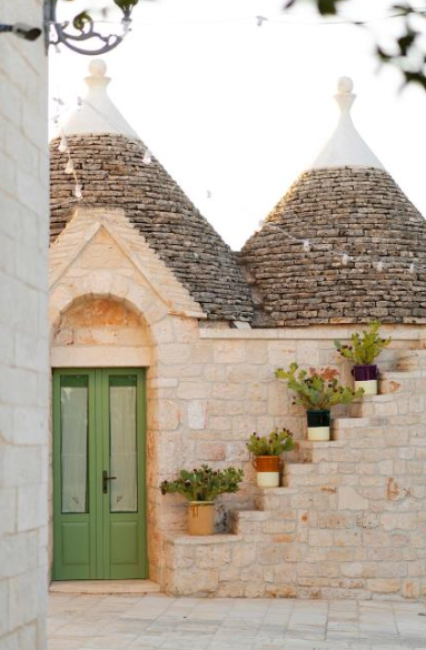
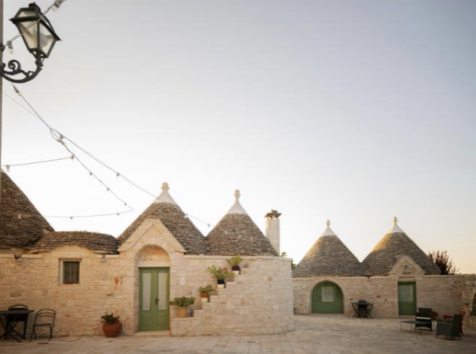
Ce n’est pas un lieu qui a ajouté des trulli comme élément de décor. Ce sont d’authentiques trulli du XVIIIe siècle, avec leurs pierres sèches, leurs cônes blancs et leurs cours qui racontent des siècles de vie dans ce coin des Pouilles que le monde connaît sous le nom de Vallée d’Itria.
— LE PREMIER REGARD
Vos invités s’arrêteront. Ils regarderont. Et avant même de dire un mot, ils sortiront leur téléphone.
Pas parce que vous le leur avez demandé. Mais parce que ce qu’ils voient, ils ne l’ont jamais vu auparavant.
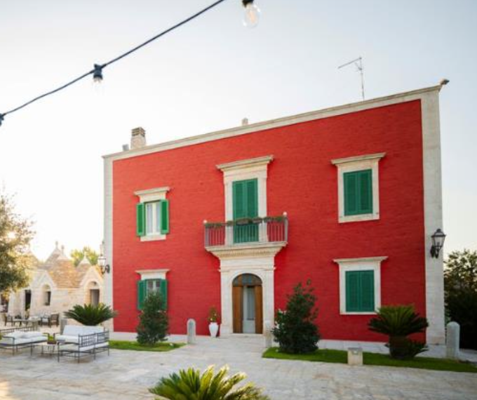
Quand vous avez commencé à chercher un lieu, vous aviez sans doute une idée précise : un endroit vraiment des Pouilles — non dans la rhétorique du marketing, mais dans la substance de ses pierres.
— CE QUE VOUS CHERCHIEZ
Un lieu où célébrer un mariage civil légal sans organiser un cortège de voitures jusqu’à la mairie.
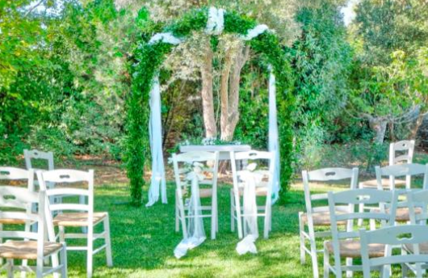
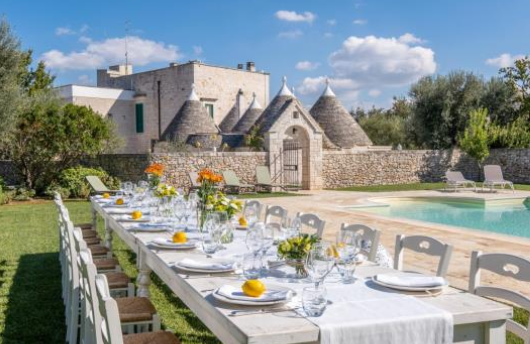
Un lieu où vos invités ne s’ennuieront pas huit heures d’affilée dans la même salle.
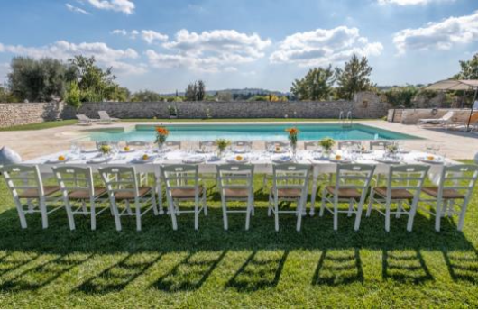
Un lieu où choisir votre traiteur, vos prestataires, votre style — sans formule imposée.
Vous avez visité de magnifiques masserie. Vous avez reçu des offres complètes. Et chaque fois, quelque chose restait en suspens : le sentiment de choisir la meilleure option disponible, pas la bonne...
— POURQUOI NOUS
Un authentique hameau du XVIIIe siècle entre vignes et oliviers, avec 8 espaces différents pour une journée qui ne se répète jamais, un mariage civil légal sur place, une liberté totale dans le choix des prestataires, une salle panoramique qui rend belle même une journée de pluie, et des trulli où dormir le soir même — sans se déplacer, sans briser la magie trop tôt.
Alors, vous vous demandez peut-être...
Pourquoi Tenuta Odegitria, parmi tous les lieux de la Vallée d’Itria ?
Parce que c’est le seul authentique hameau de trulli du XVIIIe siècle de la région avec :
- mariage civil légal sur place
- traiteur entièrement libre
- solution panoramique en cas de pluie incluse
- nuit dans les trulli intégrée.
Ce n’est pas une formule — c’est un lieu qui existe depuis trois siècles et qu’Anna Maria et Giovanni ont choisi de partager.
Continuez votre lecture car vous découvrirez dans les pages suivantes :
- ce qui rend un lieu vraiment authentique, et ce qui le distingue de ceux qui se contentent d’en avoir l’air
- comment se déroule une journée à Tenuta Odegitria, de l’arrivée au lendemain
- et pourquoi la liberté de choisir vos prestataires n’est pas un détail d’organisation, mais une marque de respect envers vous.
— LA DIFFÉRENCE
Il y a des choses que l’on remarque tout de suite en visitant les lieux de mariage des Pouilles.
Et il y en a d’autres que l’on ne comprend qu’après, en repensant à ce que l’on a vu.
Ce que l’on remarque tout de suite :
Les trulli, les vignes, les lumières cuivrées, les tables dressées de fleurs blanches.
C’est beau. C’est reconnaissable.
C’est — soyons honnêtes — déjà vu.
Ce que l’on comprend après :
- Que la plupart de ces lieux n’ont qu’un seul espace principal, avec des espaces annexes ajoutés au fil du temps pour répondre à la demande.
- Que la cérémonie a lieu à un endroit, puis tout le monde reprend la voiture pour aller signer à la mairie, puis revient, puis attend, et enfin la fête commence.
- Que le traiteur est celui du lieu, avec un menu choisi sur catalogue — pas dans la réalité.
- Que s’il pleut, le plan B est une tente blanche montée sur le parking.
- Nous ne parlons pas de mauvais lieux. Nous parlons de compromis qui ne deviennent visibles que lorsqu’il est trop tard pour les changer.
— AUTHENTICITÉ
Tenuta Odegitria n’a pas été « optimisée » pour les mariages ces dernières années.
C’est un hameau qui existe depuis le XVIIIe siècle, avec une cohérence architecturale et paysagère qui ne se construit ni ne s’achète.
Chaque cour, chaque tholos, chaque recoin de la chênaie était là bien avant que naisse le secteur du mariage.
Et cette différence — entre authenticité de substance et authenticité de décor — se ressent physiquement dès que l’on y entre.
Anna Maria et Giovanni le savent.
C’est pourquoi ils ont créé un modèle qui n’impose rien : liberté de choisir le traiteur, liberté de décoration, liberté d’imaginer la journée sans format préétabli.
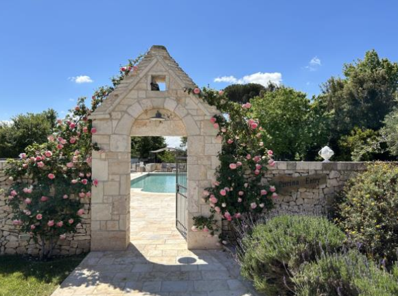
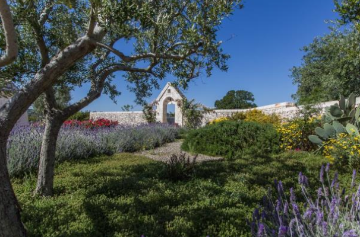
— LES ESPACES
LES ESPACES : UN HAMEAU À DÉCOUVRIR
Première impression : franchir un seuil dans le temps
À deux kilomètres de Martina Franca, quatre de Locorotondo et un kilomètre de la SS 172 « dei Trulli » se trouve Tenuta Odegitria.
L’allée d’accès est déjà un changement d’état : d’un côté la route, de l’autre une autre époque.
Des trulli en pierre sèche du XVIIIe siècle, un jardin à l’italienne, la verdure qui alterne avec la pierre blanche.
Il règne ici une qualité de silence qui n’appartient pas aux lieux conçus pour faire du bruit.
— LA CÉRÉMONIE
La chênaie et le jardin : une cérémonie au cœur de la Vallée d’Itria
Les lieux de cérémonie :
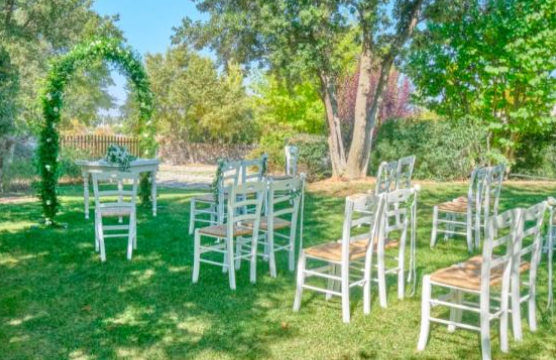
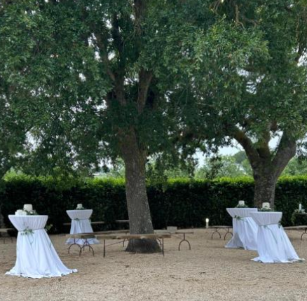
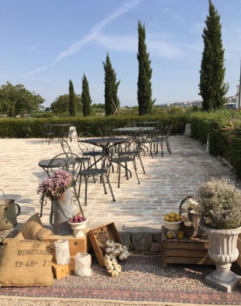
Ils partagent une caractéristique qu’aucun fleuriste ne peut reproduire : le vrai paysage tout autour.
Des vignes, des collines, les silhouettes des villages de la Vallée d’Itria en toile de fond.
Une lumière qui change au fil de la journée et qui, au coucher du soleil, rend chaque scène unique.
Naturellement ombragée et fraîche, la chênaie est aussi idéale pour le mariage civil — sans parasols disgracieux qui ne protègent pas vraiment de la chaleur.
— LE MARIAGE CIVIL
Le mariage civil au domaine, avec pleine valeur légale
Le bureau d’état civil rattaché au domaine permet de célébrer ici même un mariage civil pleinement légal, sans déplacement, sans attente, sans interrompre le fil émotionnel de la journée.
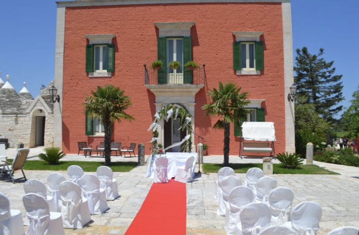
Les promesses, les invités, le paysage : tout au même endroit, au même moment.
Cette continuité — si simple à nommer, si rare à trouver — change complètement la qualité de l’expérience, pour vous et pour ceux qui vous aiment.
— EN CAS DE PLUIE
En cas de pluie : la salle aux baies vitrées panoramiques
Et si le temps ne coopère pas, la salle couverte aux baies vitrées panoramiques n’est pas un pis-aller...
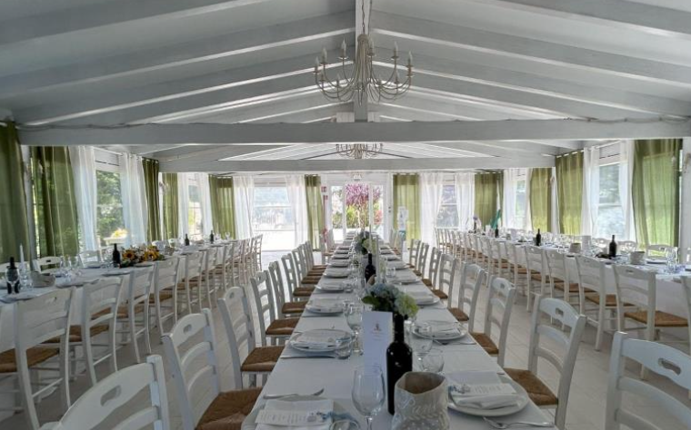
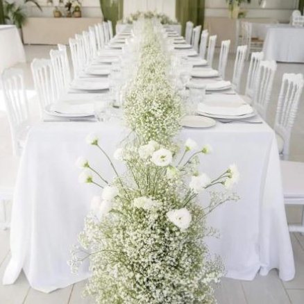
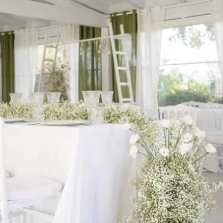
...c’est un espace tout aussi évocateur, où le paysage reste visible, où la lumière filtre à travers les vitres, où la Vallée d’Itria est toujours là, autour de vous.
— L’APÉRITIF
LE HAMEAU DE TRULLI : l’apéritif devient exploration
Quatre espaces totalement différents, disponibles en même temps pendant l’apéritif.
Vos invités ne restent pas au même endroit un verre à la main — ils se déplacent, découvrent, photographient, se retrouvent dans des recoins inattendus.
Cette libre circulation entre des décors différents a un effet précis sur l’ambiance : elle entretient la surprise, fait naître des conversations qui n’auraient pas lieu ailleurs et produit des photos qu’aucun photographe n’a besoin d’orchestrer.
Le lieu travaille pour vous, naturellement.
— LE DÎNER
Dîner entre les pierres sèches : quand le restaurant entre dans le XVIIIe siècle
Hameau de trulli, piscine, aire, salle intérieure : le dîner peut se dérouler dans des espaces totalement différents selon la saison, le style et la vision du couple.
Les murs en pierre sèche des trulli authentiques créent une atmosphère qu’aucun décorateur ne peut construire de toutes pièces — c’est la même pierre qui a résisté trois siècles, et c’est elle que vos invités verront pendant le repas.
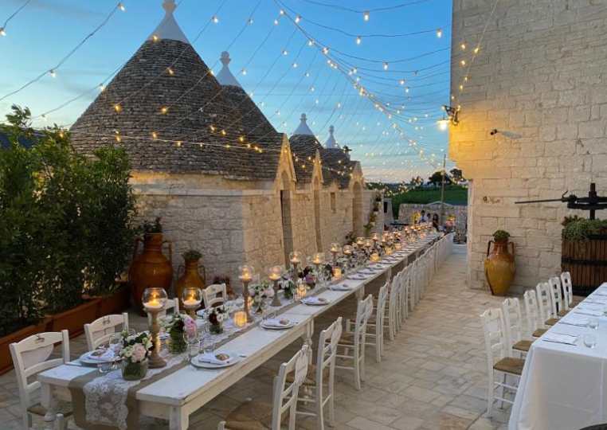
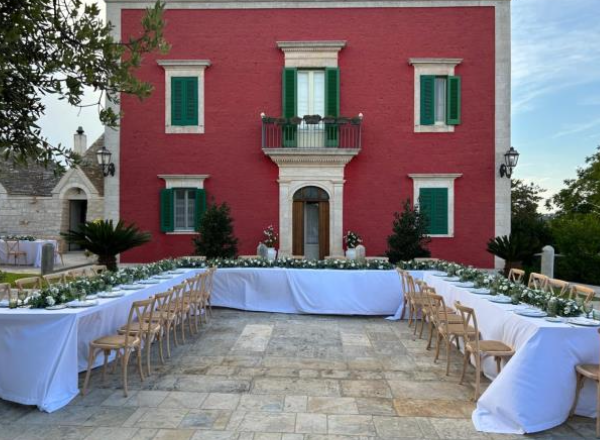
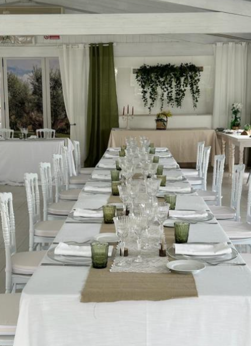
— LE TRAITEUR
Traiteur au choix : cuisine des Pouilles régionale, de saison et gastronomique
- Le choix du traiteur est entièrement libre : vous pouvez venir avec le vôtre ou choisir parmi des traiteurs sélectionnés — Sovrano Eventi (Alberobello), Rotondo Catering (Palagiano), Il Fagiano (Fasano) — qui connaissent le lieu et savent le mettre en valeur.
- La philosophie gastronomique est régionale, de saison et gastronomique : la vraie cuisine des Pouilles, sans simplification pour les grands nombres.
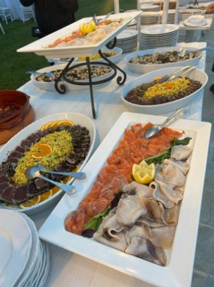
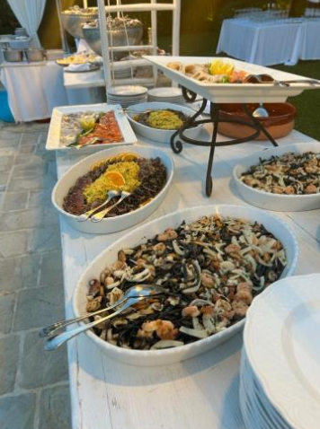
- La dégustation avec le traiteur choisi a lieu quatre à cinq mois avant l’événement : vous goûtez, évaluez, ajustez. Vous arrivez le jour du mariage en sachant exactement ce que vos invités trouveront à table.
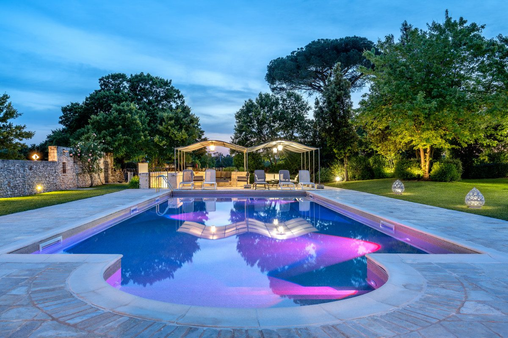
— LA SUITE NUPTIALE
La suite en trullo : quand le mariage ne s’arrête pas à minuit
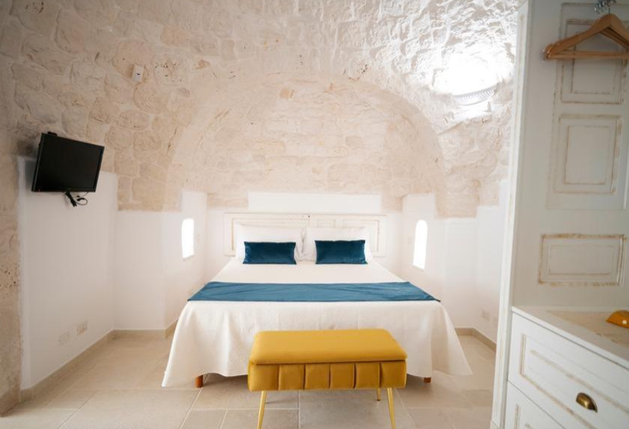
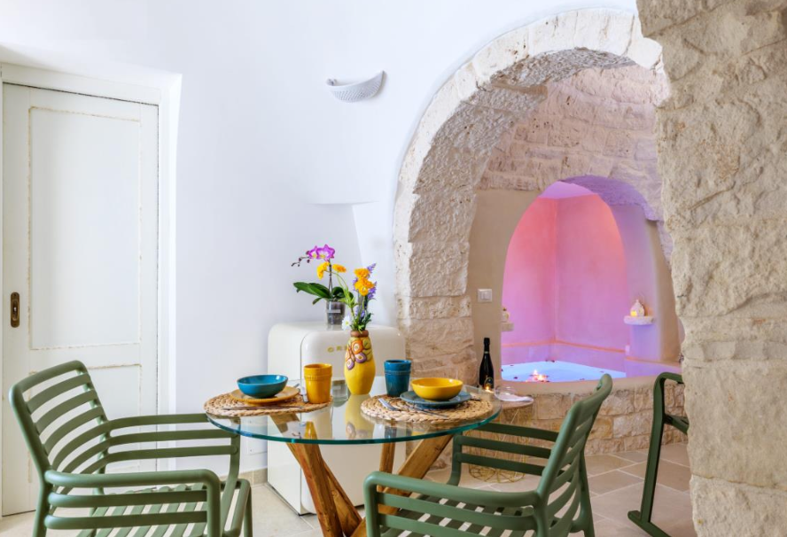
— HÉBERGEMENT
L’hébergement de vos invités
Trois appartements en trullo pour 2 à 4 personnes et trois chambres dans la masseria avec vue panoramique complètent l’accueil de vos proches — petit-déjeuner buffet inclus le lendemain matin.
Le mariage ne s’achève pas le samedi soir : il continue le dimanche matin, ici, avec les personnes qui comptent le plus.
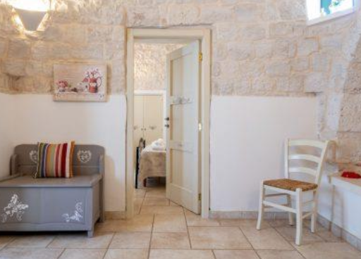
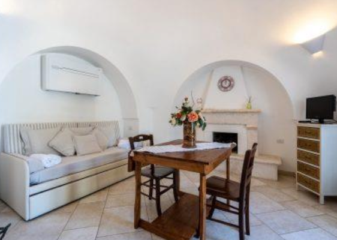
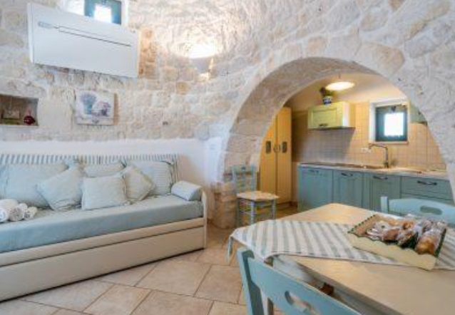
Sur demande, le week-end de mariage se prolonge : brunch au bord de la piscine, expériences locales, le plaisir de vivre ce lieu plus d’une journée.
— VOS HÔTES
ANNA MARIA & GIOVANNI : l’accueil de ceux qui ont choisi de vivre ici
Anna Maria Calella et Giovanni Conserva ne gèrent pas Tenuta Odegitria depuis un bureau lointain. Ils y vivent, y travaillent et la connaissent en toute saison et sous toutes les lumières.
Leur philosophie de l’accueil — directe, personnelle, sans intermédiaires — naît de cette proximité : ils ne vendent pas un espace, ils partagent un lieu qui leur appartient au sens le plus profond du terme.
Lors de la visite, ce sont eux qui vous accompagnent. Pendant les mois de préparation, c’est Anna Maria qui répond à vos questions. Le jour du mariage, si un imprévu survient, c’est Giovanni qui s’en occupe.
Cette continuité — la même personne du premier contact au dernier toast — est rare dans le secteur du mariage, où l’on signe souvent avec l’un, on prépare avec un autre et on vit le grand jour avec quelqu’un que l’on n’a jamais vu.
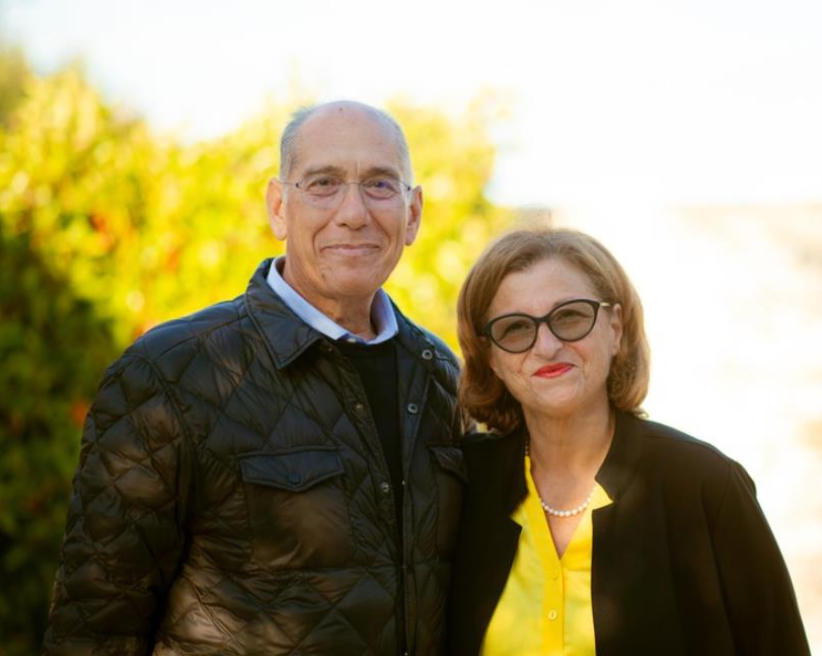
— EXPÉRIENCE
15 ans d’expérience, 70 mariages, les mêmes mots dans les avis
En quinze ans d’activité et soixante-dix mariages accueillis, les mots qui reviennent dans les témoignages des mariés sont toujours les mêmes : disponibilité, courtoisie, authenticité.
Avec, toujours, la plus belle des variantes : « nous nous sommes sentis chez nous, mais dans un lieu de rêve ».
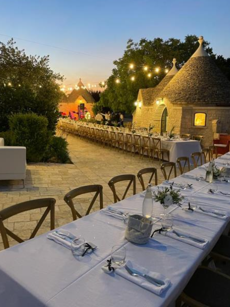
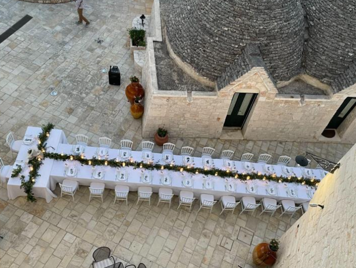
Cette combinaison — la chaleur familiale d’un accueil comme à la maison, dans un lieu objectivement extraordinaire — est ce qui transforme un mariage « réussi » en mariage « inoubliable, comme il se doit ».
— EXCLUSIVITÉ
Un lieu privatisé
Que signifie avoir le lieu en exclusivité ?
Non seulement qu’il n’y a pas d’autre mariage en même temps ou juste après, mais aussi qu’aucun autre petit événement ni aucun hôte extérieur n’est présent le jour de vos noces — par exemple des clients occasionnels logés dans les chambres.
Vous voulez sans doute éviter curieux et intrus le jour J, tout comme vos invités ne voudraient jamais devoir boire leur café en vitesse parce qu’on leur demande de partir pour laisser place au service du soir.
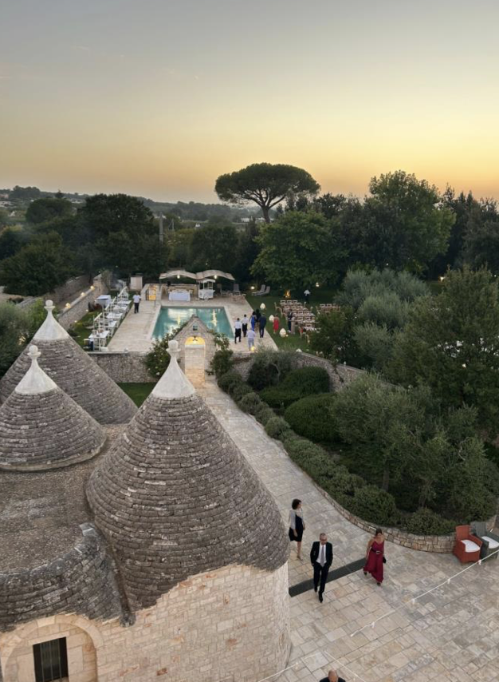
— CONTACT
À vous de jouer !
Venez le découvrir. Aucun mot ne vaut l’instant où vous entrez pour la première fois dans le hameau et comprenez — sans explication — que votre recherche est terminée.
— CONTACT
Nous contacter
— QUESTIONS FRÉQUENTES
Questions fréquentes sur les mariages
Peut-on célébrer un mariage civil au domaine ?
Oui. Tenuta Odegitria est reconnue comme bureau d’état civil (art. 3 DPR 396/2000) : le mariage civil est célébré sur place avec pleine valeur légale, sans passer par la mairie.
Et pour un mariage religieux ?
À proximité se trouvent l’église Sant’Antonio ai Cappuccini, siège du culte de la Madonna dell’Odegitria, et les églises baroques historiques de Martina Franca.
Quels espaces sont disponibles ?
Le jardin à l’italienne, la chênaie, l’aire, la piscine, le hameau de trulli du XVIIIe siècle et une salle intérieure aux baies vitrées panoramiques, qui sert aussi de solution en cas de pluie.
Combien d’invités le domaine peut-il accueillir ?
Les espaces du domaine accueillent des événements jusqu’à environ 200 personnes. Pour d’autres effectifs, contactez-nous : nous trouverons ensemble la meilleure solution.
Le traiteur est-il imposé ?
Non, le choix est libre : apportez votre traiteur ou choisissez-en un qui connaît déjà le lieu, comme Sovrano Eventi (Alberobello), Rotondo Catering (Palagiano) ou Il Fagiano (Fasano).
Le lieu est-il privatisé ?
Oui : le jour de votre mariage, il n’y a ni autre mariage, ni autre événement, ni hôtes extérieurs au domaine.
Où peuvent dormir les mariés et les invités ?
Les mariés dans la Suite Trullo Il Palmento avec jacuzzi privé ; famille et amis dans les trulli et les chambres de la masseria (jusqu’à 21 couchages au total), avec petit-déjeuner buffet le lendemain.
Comment demander un devis ou une visite ?
Remplissez le formulaire de cette page, écrivez à info@tenutaodegitria.it ou appelez Anna Maria (+39 338 651 0960) ou Giovanni (+39 339 674 5290).
— LES FÊTES AU DOMAINE
Noël et Nouvel An dans un trullo
Trulli chauffés, lumières douces et villages de la Vallée d’Itria en fête : passez les fêtes à Tenuta Odegitria.